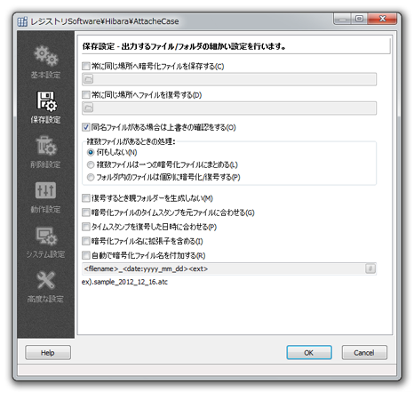

アタッシェケースで作成する、暗号化ファイルや復号したファイルなどの保存・上書きに関する設定を行えます。

バックアップファイルへ保存しているとか、 USBフラッシュメモリーなどのメディアに必ずコピーして持ち歩いているというときに指定しておくと、 直接そこへ暗号化ファイルを作るので便利です。チェックが外されていると、暗号化ファイルは通常、 元ファイルのある同じフォルダに生成されます。
たとえば、「<Desktop>\temp」と指定すれば、 デスクトップにあるtempフォルダ内を常に保存する先として認識します。
また、「<volume:MOBILE>\」と指定したとき、抜き差し可能なフラッシュメモリーで、 常にドライブレターが変わるようなとき、 そのフラッシュメモリーのボリュームラベル名を指定しておくだけで、 暗号化の際に自動で該当のドライブを探してパスを補完します。
たとえば、差されたフラッシュメモリーが「H:\」とWindowsによって認識され、 ボリュームラベルが「MOBILE」とするとき、 暗号化ファイルを常に保存する場所を 「<volume:MOBILE>\temp」とだけ指定しておけば、作成される暗号化ファイルは、
H:\temp\暗号化ファイル.atc
として保存されることになります。フラッシュメモリーを差したタイミングによって、 「H:\」ドライブが変わってしまったとしても、正常に保存することが可能です。 なお、指定の保存先がない場合は、エラーメッセージが出て、暗号化処理を終了します。
前項のオプションと同様に、復号化したファイルを常に同じ場所へ保存したいという場合にチェックします。 暗号化されたデータは持ち運ぶMOなどのメディアへ送り、復号化したファイルは常に 「マイ ドキュメント（My Documents）」へ 置いておきたいという場合に便利な機能です。
「常に同じ場所へ暗号化ファイルを保存する」と同様に、"<Desktop>"などの書式を指定すると、 その場所へ復号したファイルを生成することができます。
暗号/復号化の際、すでに同じ名前のファイル（またはフォルダ）が作成先にある場合、 確認のメッセージを表示します。 チェックを外すと、そのまま確認無しで上書きが行われます。
複数ファイルの処理 複数のファイルをアタッシェケースで処理するときのオプションを指定します。 通常通りの動きを期待する場合は、「何もしない」を選択します。
フォルダを含むデータを暗号化した場合、復号時にその親（基本）フォルダを生成するかどうかを選択できます。 チェックすると、フォルダ内にある（複数の）ファイルを暗号化ファイルのある場所へそのまま復号します。 複数ファイルをまとめて暗号化した際に、付けた名前でフォルダを生成したくない場合に、便利なオプションです。
出力する暗号化ファイル（*.atc/*.exe）のタイムスタンプを、元ファイルのタイムスタンプに合わせます。 複数ファイルを一つにまとめて暗号化する際には、一番最初に処理するファイル/フォルダのタイムスタンプに合わせられます。
各ファイルのタイムスタンプ（更新日時）は、暗号化してもそのまま変更されず保持されますが、 復号化した時の日時へ強制的に合わせたい場合は、チェックをします。 ファイル管理をタイムスタンプで行っている上級者向けの機能ですので、基本的にはチェックする必要はありません。
チェックを入れることで、生成する暗号化ファイルの名前に、元ファイルの拡張子を含めるようになります。
たとえば、
新しい企画案.doc , 新しい企画案.xls
というファイルが２つあって、同時に暗号化しようとすると、 どちらも「新しい企画案.atc」となって２つは同時に暗号化できませんが、 このオプションをチェックすることで、
新しい企画案.doc.atc 新しい企画案.xls.atc
といったように、元のファイル拡張子をそのまま残して暗号化ファイルを作ります。 暗号化の際のファイル名重複を避けることができます。
チェックして、あらかじめ書式を指定しておくことで、いつも決まった規則で暗号化ファイルの名前を付けることができます。
指定できる項目は、以下の通りです。
なお、挿入する書式は、それぞれ < > かっこで指定します。
作成する暗号化ファイル名が「EncodeFile.atc」だとして...
これらを組み合わせて指定することで、常に自動で付けるファイル名規則を指定します。
なかなか難しいかとは思いますが、フォーム上にサンプル表示されますので、入力しながらいろいろ試してみてください。
たとえば、
<date:yyyy_mm_dd>
と、 date: の後に書式を指定することで、現在の日時を挿入することができます。挿入できる詳しい書式については、「日付書式例」を参照ください。
現在日時が 2004/2/1 15:03:42 だとして、以下の指定を行うと、
<date:yyyy_mm_dd>
↓
2004_02_01
<date:yymmdd-hhnnss>
↓
040201-150342
などと置き換えられます。
たとえば、
<number:3>
と number: の後に数字を指定することで、挿入する通し番号の桁数を指定できます。作成されるファイル名が「sample.atc」だとすると、
<filename><number:3><ext>
と指定することで、「sample001.atc」から順にナンバリング、sample002.atc，sample003.atc…と連続して作成されます。
この「連番」書式は、使い方によっては便利な機能です。 自動的に欠番を探して、重複がないようにファイル名を付けて作成していくので、 いちいち上書きの確認がありません。暗号化ファイルを連続して作成して版管理したり、 バックアップとして使用することができます。
たとえば、
<random:8>
と、 random: の後に数字を指定することで、その文字数分ランダムな文字列を挿入することができます。<random:8><ext>
として作成すると、
MA[vV}e7.atc
といった、その都度ランダムな文字列（英数字、記号から）を生成、組み合わせてファイル名を作ります。
ファイル名から中身を類推されるのを防いだり、隠蔽したいときに便利な機能でしょう。 ただし、これをやると元ファイル名が、暗号化ファイルからはまったく分からなくなるので、 管理には十分注意が必要です。
たとえば、生成されるファイル名がEncodeFile.atcとします。
<fhead:4>
と、fhead: の後に数字を指定することで、 ファイル名を先頭からその文字数分だけ抜いた名前を付けることができます。<fhead:3><ext>
として作成すると、
Enc.atc
同様に、
<fend:4><ext>
と指定すると、
File.atc
となります。
Copyright© 2002-2013 M.Hibara, All rights Reserved.